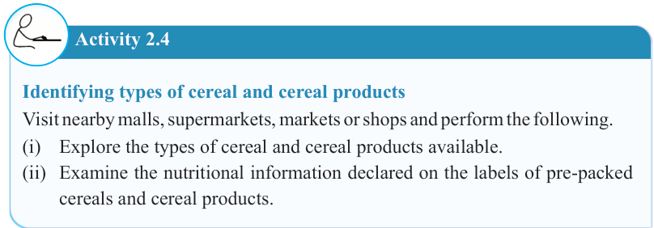
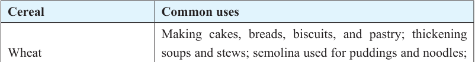

28


Food and Human Nutrition

Form Two

by adding corn flour in the ratio of 2:1, meaning that the amount of strong flour is twice the amount of corn flour.
(ii) Medium flour
This type of flour has less gluten content between 9 and 12 percent. It is appropriate for household baking needs such as bread, pizza, cookies, plain biscuits, scones and pastry dishes. It can also be used as thickening agents for sauces. This type of flour includes all-purpose flour and pastry flour.
(iii) Soft flour
This type of flour has low gluten content, ranging from 7 to 9 percent. It is milled in a fine texture. Soft flour is also known as cake flour because it is suitable for making soft textured products like cakes and pastry.
Activity 2.4
Identifying types of cereal and cereal products
Visit nearby malls, supermarkets, markets or shops and perform the following.
(i) Explore the types of cereal and cereal products available.
(ii) Examine the nutritional information declared on the labels of pre-packed cereals and cereal products.
Uses of cereals
Cereals come in various types, each with unique characteristics and culinary applications. Table 2.2 shows cereals and their common uses.
Table 2.2: Cereals and their common uses

Cereal
Common uses
Wheat
Making cakes, breads, biscuits, and pastry; thickening soups and stews; semolina used for puddings and noodles; pasta used for making various dishes
Maize (Corn)
Green maize on the cob is used to make roasted, boiled and grilled maize; dried crushed maize is used to make maize with kidney beans; maize flour for thin and thick porridge; corn flour for thickening soups, stews, and puddings
17/09/2025 16:30